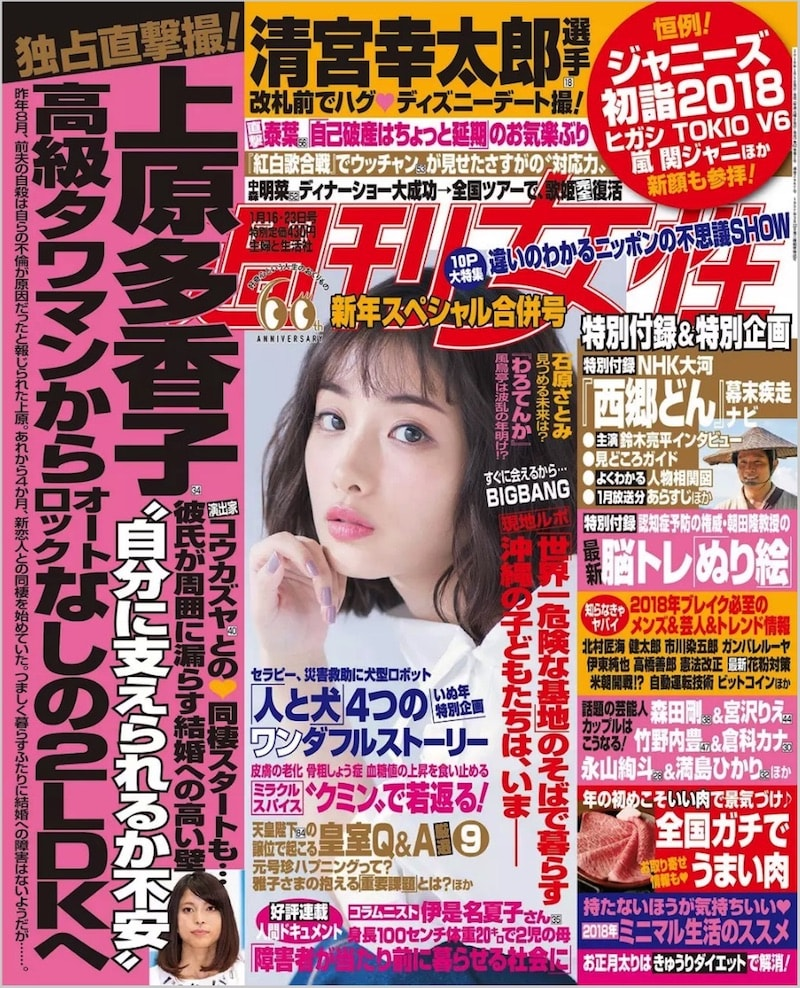

Dashgon Lab: New Front-End Experiment
清宮幸太郎
18
選手
改札前でハグ❤️ディズニーデート撮!
直撃
泰葉
56
｢自己破産はちょっと延期｣のお気楽ぶり
｢紅白歌合戦｣でウッチャンが見せたさすがの”対応力”
中森
明菜
52
ディナーショー大成功→全国ツアーで、歌姫
完全
復活
週刊
女
性
違いのわかるニッポンの不思議SHOW
新年スペシャル合併号
1月16・23日号
特別定価 430円
主婦と生活社
10P
大特集
恒例!
ジャニーズ
初詣2018
ヒガシ TOKIO V6
嵐 関ジャニ
ほか
新顔も参拝!
２０１８年１月５日発行・発売（毎週火曜日発行・発売） 第６２巻第２号 通巻２９６７号 １９５７年３月２２日第三種郵便物認可
独占直撃撮!
上原多香子
34
演出家
コウカズヤ
40
との❤️同棲スタートも…
彼氏が周囲に漏らす結婚への高い壁
”自分に支えられるか不安”
高級タワマンから
オート
なしの２LDKへ
オート
ロック
昨年８月、前夫の自殺は自らの不倫が原因だったと報じられた上原。 あれから４か月、新恋人との同棲を初めていた。 つましく暮らすふたりに結婚への障害はないようだが……。
特別付録&特別企画
特別付録
NHK大河
『西郷どん』
幕末疾走
ナビ
主演
鈴木亮平インタビュー
見どころガイド
よくわかる
人物相関図
１月放送分
あらすじ
ほか
特別付録
認知症予防の権威・朝田隆教授の
最新
脳トレ｢ぬり絵｣
知らなきゃ
ヤバイ
2018年ブレイク必死の
メンズ＆芸人＆トレンド情報
北村匠海 健太郎 市川染五郎 ガンバレルーヤ
伊東純也 高橋善郎 憲法改正
最新
花粉対策
米朝開戦⁉︎ 自動運転技術 ビットコイン
ほか
話題の芸能人
カップルは
こうなる！
森田剛
38
＆宮沢りえ
44
竹野内豊
47
＆倉科カナ
30
永山绚斗
28
＆満島ひかり
32
ほか
年の初めこそ
いい肉
で景気づけ♪
全国ガチで
うまい肉
お取り寄せ
情報も❤️
持たないほうが気持ちいい❤️
2018年
ミニマル生活ススメ
お正月太りは
きゅうりダイエット
で解消！
石原さとみ
見つめる未来は？
｢わろてんか｣
風鳥亭は波乱の年明け⁉︎
｢世界一危険な基地｣のそばで暮らす
沖縄の子どもたちは、いまーー
すぐに会えるから…
BIGBANG
現地ルポ

Optimized for Chrome and Firefox (not for Safari and IE yet)
Web
Paper
Hide Left Sidebar
Show Left Sidebar
Hide Right Sidebar
Show Right Sidebar
Hide Image
Show Image